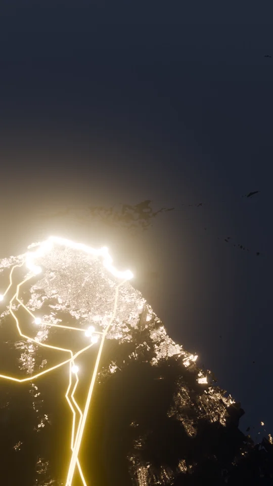

Capítulo 02 Generación solar y almacenamiento
Guardar el sol para la noche.
El sol entrega más energía a mediodía y la demanda sigue alta al anochecer. Desliza el reloj de Colombia y descubre lo que pasa entre las dos curvas.
Caribe colombiano · Vuelo renderizado en Blender
01 · El video Capítulo 02
Guardar el sol para la noche.
La generación solar sube al mediodía y cae al atardecer, cuando la demanda sigue alta. Míralo y luego explora el reloj de la red.
- Formato
- Vertical 9:16
- Duración
- —
- Capítulo
- 02 · Sol
02 · XM Perfil horario
El reloj de la red.
Compara lo que generan los paneles y lo que consume Colombia a cada hora del día. Arrastra sobre la gráfica para moverte por las horas.
Generación solar y demanda
Cargando datos…
03 · Render 3D Caribe colombiano
Cuando cae la tarde.
Compara dos momentos del vuelo sobre el Caribe. La radiancia nocturna VIIRS aporta la capa de luz del render. Arrastra la cortina o activa el parpadeo.

 DíaNoche
DíaNoche
04 · Almacenamiento Caso de referencia
Guardar energía para después.
Una batería puede cargarse cuando hay generación disponible y entregar energía más tarde, cuando cambia la demanda.
La Arenosa, en el Atlántico, tendrá 45 MW y 45 MWh: puede entregar toda su potencia durante una hora. Está en desarrollo, con entrada estimada en 2027.
Boletín UPME · La Arenosa, pág. 44 ↗Cargando la figura de la batería…

Siguiente Capítulo 03
La red que cruza fronteras.
Continuar el recorrido